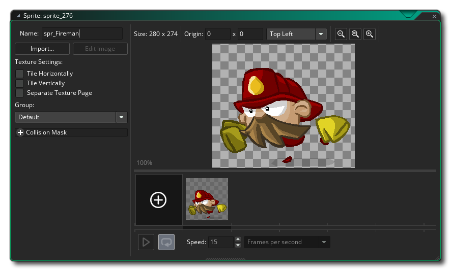

GameMaker Studio 2 has support for non-bitmap sprites in the forum of vector SWF files or Spine Skeletal Animation files. 这两种格式都有其优缺点，下面的两个部分将解释如何将它们导入到 精灵编辑器 中，以及关于它们如何呈现的一些信息。
GameMaker Studio 2 对向量精灵的支持有限通常，GameMaker 中的所有精灵都使用位图，虽然在内容方面很灵活，但位图精灵的大小和帧数会受到内存的限制。矢量精灵通过以不同的方式存储和绘制它们的内容来绕过这些限制——它们不是像素网格（缩放后会变得块状或模糊），而是以三角形的形式绘制，可以缩放而不会丢失清晰度，如下图所示：
To help you visualise how this is done, the image below is of the same vector Fireman sprite only now we can see the polygons that are used to make the image within GameMaker: Studio:
然而，当涉及到编程游戏时，没有什么是自由的，而体现在矢量精灵上的是绘制起来更加费劲，而且随着被导入的动画的复杂性的增加，这种速度差异也会增加。此外，与位图精灵不同，它们的内存使用受到 视觉复杂性 的影响。考虑到这一点，它们确实使添加大型动画图形成为可能，而不可能使用传统的位图精灵。
在性能方程的另一面，因为向量精灵只绘制绝对需要的像素（不像位图精灵也“绘制”图像周围的空白），从 GPU 的角度来看，它们可以更节约。此外，通常矢量精灵比它们的位图等价物要小得多 —— 对于上面的 fireman 示例，各种精灵的大小如下:
位图 70x68 = 4x70x68 字节 x 12 帧 = 223 千字节
矢量图 = 54 千字节
如果你将精灵的分辨率提高四倍：
位图 280x272 = 4x280x272 字节 x 12 帧 = 3570 千字节
矢量图 = 54 千字节
因此，正如你所看到的那样，通过使用向量精灵可以潜在地节省大量的内存，而且我们在未来节省空间方面仍有很大的潜力。
目前，GameMaker Studio 2 只能从 SWF 格式文件 中导入矢量图像，而将矢量图像导入程序的方法与添加普通位图图像的方法几乎相同。要添加矢量精灵，请创建一个新的精灵，它将打开标准的加载精灵对话框，但请确保你已经在底部的文件过滤器中选择了 *.swf。
单击“加载”按钮将向资源树添加矢量图像或动画，并在处理文件时显示进度条。注意，根据文件的复杂性，这可能需要一段时间（对于更复杂的动画，最多需要一分钟）。处理完成后，你将返回到精灵属性对话框，现在它将如下所示： 
如你所见，它看起来像普通的精灵对话框，矢量文件的第一帧显示在图像预览窗口的右侧。不过，与正常的精灵对话框相比，有一些变化。首先，编辑精灵 按钮已经消失了，因为在这种精灵中没有任何要编辑的位图，其次，添加了一个新的 显示精灵 按钮。这个按钮将打开矢量文件默认关联的应用程序。这通常会使用默认的网页浏览器，但如果你没有相关程序文件，就什么都不会发生，按钮是禁用的（你可以通过打开 Windows 资源管理器，右键单击 一个矢量文件，然后使用 “打开方式” 选择程序与之关联解决这个问题）。你还可以在 GameMaker Studio 2 中的 常规设置 - 路径 部分中关联这些精灵的查看器，显示精灵 按钮将打开该查看器，而不是默认查看器。
注意： 图像在你选择的预览编辑器中的样子和它在你的游戏中的样子是 不 一样的，在精灵编辑器的预览窗口中的样子也是不一样的。矢量图像将以创建时的大小导入，而不是预览显示时的大小（例如，浏览器通常会缩放图像以匹配）。
你还可以在绘制时设置向量精灵的 质量。这将简单地减少或增加用于生成精灵的三角形的数量，对于大多数游戏来说，默认的质量值为 50 就足够了，但是如果你使用的是极限缩放，或者存在性能问题，那么你应该尝试修改这个值。从这里开始，编辑器的其他部分应该与位图精灵的功能相同。
在导入矢量精灵时有许多的事情你应该知道，最重要的是,一些精灵绘制和精灵管理函数因为技术原因不支持，尤其是那些仅画精灵的一部分或以某种方式“倾斜”位置的绘制函数（具体细节请参阅 draw_sprite_*()）。然而，基本的精灵绘制函数和内建 精灵变量 一样都得到了充分的支持。你还可以使用这里的函数为正在绘制的 SWF 精灵设置不同的 抗锯齿 （AA） 值：绘制精灵和图块。
你也应该知道以下几点：
- 在导入 *.SWF 文件时，动作脚本 是 不 支持的，所以如果你的 SWF 依赖于它来正确工作，那么它可能不会是正确的。同样的，任何有自己时间轴的嵌入影片剪辑将只在动画中显示第一帧 —— 所有动画必须在主时间轴上。
- 如果你的矢量文件有特别精细的细节，你可能偶尔会发现导出的精灵有洞或奇怪的三角形。这是因为在小尺度上，几何图形有时会合在一起，产生非三角的形状。在这种情况下，你有两种选择——你可以放大矢量文件的内容，这将给导入器提供更多的空间，或者你可以尝试降低正在崩溃的对象的细节级别。
- GameMaker Studio 2 使用 SWF 的 舞台大小 作为生成精灵的边界。然而，如果舞台上有任何超出这些界限的东西，它依然会被绘制。这意味着，如果不希望显示任何内容，你应该尽量避免在舞台边界之外放置任何内容，或者使用遮罩层将绘图限制在该区域。
- 舞台大小还会影响生成的碰撞遮罩的大小，因此，如果你的动画有舞台大小很大并且有很多帧，那么你可能会吃掉很多内存。所以，只有在你真正需要的时候才使用精确的碰撞遮罩。
- 由于一个 SWF 文件是由多个层创建的，其中一些层可能会重叠，透明度并不像位图精灵那样工作 —— 重叠的区域看起来不像精灵的其他部分那么透明，因为那里的像素被绘制了多次。
- 位图填充 是 受支持的，但如果你使用平铺位图填充作为你的 SWF 文件的一部分，你需要确保位图的大小是 2 的次方数，否则它不会正确平铺。此外还支持文本呈现，但是你需要将字体嵌入到 SWF 文件中，使其显示在生成的精灵中。此外，目前只 支持左对齐的单行文本。
使用骨骼动画制作的精灵，是指一个基于 “骨骼” 创建的和随着时间的推移使用 关键帧 移动骨骼的组成部分的动画。然后，从纹理图集和导出的动画中 剥离出 这个骨架。Gamemaker:Studio 允许你导入这种类型的精灵，只要它已经导出为 *.json 格式文件，并且在同一个目录中有正确关联的纹理图集文件（*.atlas）和图像文件（*.png）。
重要：GameMaker Studio 2 仅支持每个精灵一个纹理图集。:注意： 这个功能目前仅支持使用 Spine 程序创建的骨骼。
目前，GameMaker Studio 2 只能从 Spine 程序制作的 JSON 格式文件 中导入矢量图像，但将它们导入程序的方法与添加普通位图图像的方法几乎相同。要添加骨骼动画，你需要创建一个新的精灵，它将打开标准的加载精灵对话框，但要确保你在底部的文件过滤器中选择了 *.json 。
单击“加载”按钮将把骨骼动画作为精灵添加到资源树中，并在处理文件时显示进度条。注意，根据文件的复杂性，这可能需要一到两分钟。处理完成后，你将返回到精灵属性对话框，现在它将如下所示：
导入动画后，你可以设置碰撞属性，但是请注意，这里的限制仅限于使用精确的碰撞或边框碰撞，骨骼动画的碰撞数据显式地取自提供的数据。如果从导入的文件中丢失了数据，GameMaker Studio 2 不会生成任何碰撞遮罩，这意味着如果在用于创建导入的映像的程序中没有正确设置遮罩，碰撞就不会发生。
注意： 由于骨骼动画的复杂性，在精灵编辑器中显示的预览图像并不能准确地代表你的动画，而只是给你一个简单的图像，但是在房间编辑器中可视化动画却可以。
与位图精灵不同，导入的骨骼动画精灵不能在编辑器中以任何方式进行修改，但是在 GameMaker 语言（GML）中有许多可用的函数，可以用来更改皮肤、设置属性和控制动画的其他方面。
当导入骨架动画精灵时有许多的事情你应该知道，最重要的是，一些精灵图像和精灵管理函数因为技术原因并不支持，尤其是那些仅画精灵的一部分或以某种方式“倾斜”位置的绘制函数（具体细节请参阅 draw_sprite_*()）。然而，基本的精灵绘制函数和内建 精灵变量 一样都得到了充分的支持。除了这些函数和变量，你还可以使用特殊的 skeleton_* 函数设置和改变动画属性，在参考部分列出并解释了 骨骼动画。